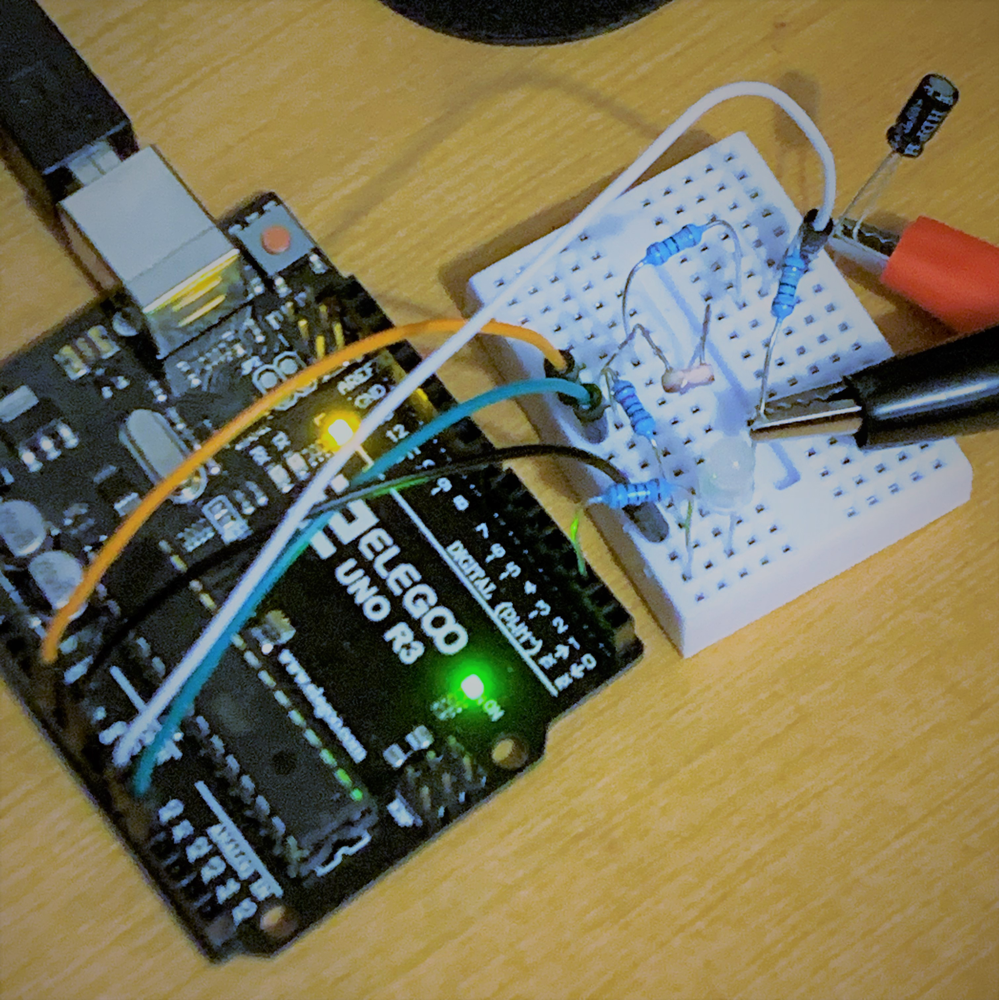
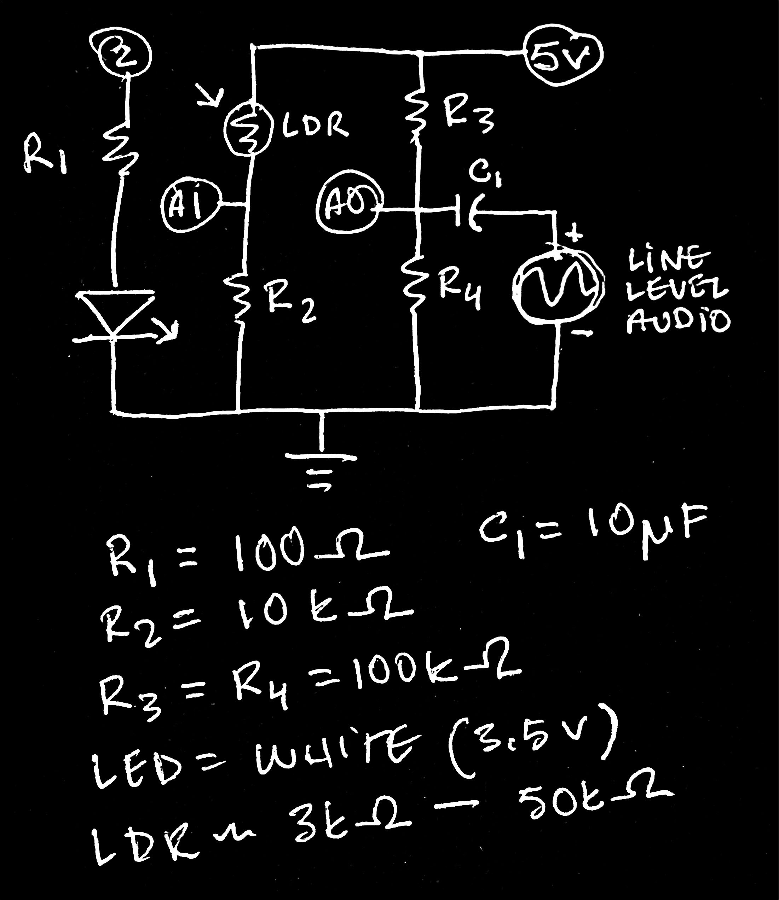

We have improved our A05 design to facilitate more techno-synesthesia. Now you are free to dance about while an audio signal manipulates the draw rate of random geometry and a photoresistor driven by a blinking LED controls the shade value! When you need a change of pace, simply strike a key on your Numpad to change the LED's blinking rate. Also: Now in fullscreen!
Using the p5serial connection, the arduino sends analogRead values from a line level audio signal and the photoresistor to a p5 driven website, which converts this pure data into pure enjoyment in the format of a live-visual installation masquerading as a website on your very own computer. The p5 script will listen for and send any numerical key presses over to your arduino, which will then use these signals to make things happen, specifically picking a different blink rate from an array of predetermine rates (associated with numbers 0-9).
In order to accept the line-level analog audio signal (~ +/-2V), we need a simple DC offset circuit to keep ardy from seeing any negative voltage, which can be harmful! Essentially, this part of the circuit is a voltage divider, feeding a steady 2.5V to the analog input. With a saftey-DC-blocking-capicitor in the mix, the audio signal is fed into this divider, and by the power of science the analog signal either adds to or subtracts from the voltage already at this point, effectively providing the analog input a range of 1-4V. This is confirmed by the analogRead values which range from about 200-800.
******************************** ARDUINO CODE *****************************
/*
* The following references were used for keeping serial com tidy
* https://www.arduino.cc/en/Tutorial/SerialCallResponseASCII
* https://itp.nyu.edu/physcomp/lab-intro-to-serial-communications/
*
* noledge for DC bias/offset here:
* https://electronics.stackexchange.com/questions/14404/dc-biasing-audio-signal
*/
// vars... i for creating array, incomingData for holding
// serial com, audioIn for analogRead from audio signal,
// photoRes for analogRead from photo resistor,
// ledState/strobeState/strobeDur/strobeRate/strobeTime for LED
// control, rateArray[10] for creating an array that can hold ten items
byte i;
byte ledPin = 2;
byte incomingData;
int audioIn;
int photoRes;
bool ledState = 0;
bool strobeState = 0;
byte strobeDur = 10;
unsigned long strobeRate = 150;
unsigned long strobeTime = 0;
int rateArray[10];
void setup()
{
pinMode(ledPin, OUTPUT);
// for loop during setup to create array holding
// strobe rates in increments of 50ms
for (i = 0; i <= 9; i++) {
rateArray[i] = 50 * i;
}
// initialize serial connection, wait for signal
Serial.begin(9600);
while (!Serial) {}
}
void loop()
{
// check for incoming serial data,
// if available save to var
if (Serial.available() > 0) {
incomingData = Serial.read();
// 48 = ASCII for "0". if zero received turn strobe off.
if (incomingData == 48) {
digitalWrite(ledPin, LOW);
strobeState = 0;
// Serial.println("Off"); // used for testing
}
// ASCII 49 - 57 == "1" - "9". if number
// received, change rate to value stored in
// array by subtracting 48 (ASCII conversion)
// and turn strobe on
if (incomingData >= 49 && incomingData <= 57) {
strobeRate = rateArray[incomingData - 48];
strobeState = 1;
// Serial.println("On "); // used for testing
// Serial.println(strobeRate); // used for testing
}
// since we had serial come in, we know
// p5serial is ready to receive. update and send
// analogRead values for audio and light.
// sent as one line using a comma for parsing in p5
audioIn = analogRead(A1);
photoRes = analogRead(A0);
Serial.print(audioIn);
Serial.print(",");
Serial.println(photoRes);
}
// run LED regardless of serial activity. the next two if statements
// work in tandem. first check to see if strobe is on. then check
// if led is on or off. third condition is for timing. if led OFF
// and the current strobeRate time has passed, turn the led on and
// update timing. if led ON for the set duration, turn off. we use
// a different ON duration so LED flash is indepedent of strobeRate,
// like a strobe light... which could be wired up using a mosfet :D
if (strobeState == 1 && ledState == 0 && millis() - strobeTime >= strobeRate) {
ledState = !ledState;
digitalWrite (ledPin, HIGH);
strobeTime = millis();
}
if (strobeState == 1 && ledState == 1 && millis() - strobeTime >= strobeDur) {
ledState = !ledState;
digitalWrite(ledPin, LOW);
strobeTime = millis();
}
}
******************************** P5 CODE ***********************************
// vars for serial library, incoming serial com,
// geometry shade value and draw rate
var serial;
var dataIn;
var shade;
var rate;
function setup() {
// initialize serialport library, create callback for incoming data,
// open serial port for arduino (COM10 in my case)
serial = new p5.SerialPort(); // make a new instance of the serialport library
serial.on('data', serialEvent); // callback for when new data arrives
serial.open('COM10'); // open a serial port
// create fullscreen size black canvas, start geometry color black
createCanvas(displayWidth, displayHeight);
background(0);
shade = 0;
}
// the heart of p5serial functionality. the serialEvent will read messages from
// the arduino and save them to dataIn var. that var is then checked to have
// sufficient information. if so, the information is taken and split into an
// array, separating the sensor values. this array is then checked for length
// to make sure it's the information we want, in which case the values are mapped
// to appropriate values for the shading (0-255) and framerate (0-50). once this
// is completed, send an x to tell arduino we're ready for more
function serialEvent() {
dataIn = serial.readLine();
if (dataIn.length > 0) {
var sensors = split(dataIn, ',');
if (sensors.length > 1) {
shade = map(sensors[0], 200, 800, 0, 255);
rate = map(sensors[1], 50, 1000, 0, 50);
// print(shade); print(rate); // used for testing
}
serial.write('x');
}
}
function draw() {
// if a key press of 0 - 9 is detected, send that over to ardy
if (key >= 0 && key <= 9) { serial.write(key); }
// make the background black for each cycle to prevent geom stackup
// update framerate based on serial input
background(0);
frameRate(rate);
// create a random shape based on vertices. a 100 pixel border is coded in
fill(shade);
beginShape();
vertex(random(100, displayWidth - 100), random(100, displayHeight - 100));
vertex(random(100, displayWidth - 100), random(100, displayHeight - 100));
vertex(random(100, displayWidth - 100), random(100, displayHeight - 100));
vertex(random(100, displayWidth - 100), random(100, displayHeight - 100));
vertex(random(100, displayWidth - 100), random(100, displayHeight - 100));
vertex(random(100, displayWidth - 100), random(100, displayHeight - 100));
endShape(CLOSE);
}